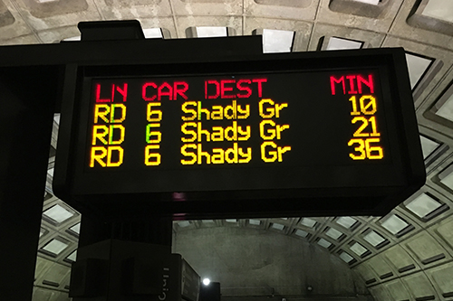

You're on your way to work, heading home, or going to meet some friends...
... and you walk into the station and see this:
Given the train position data and the time of the query
So how are wait times estimated?
We start with the
$$w(t) = \frac{\int_t^{\infty} h(s)ds}{\int_0^{\infty}s\,h(s)ds}$$